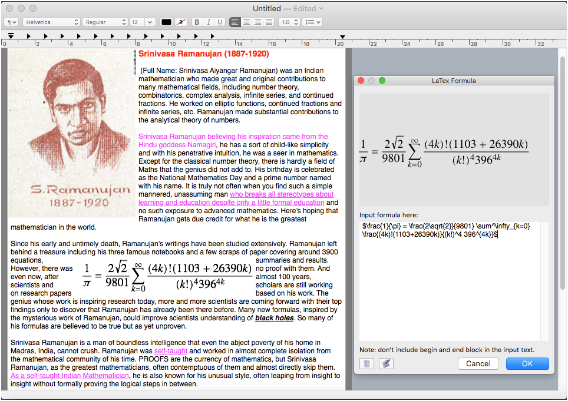

MathHelfer
Version 1.0
MathHelfer is an ultra lightweight word processor help you write well formatted science article in a very light and efficient way without install huge software packages such as TEX and Office Suite. As a rich text editor, MathHelfer can not only handle LaTeX math and equations but also can deal with common style and format tasks required by a normal word processor.

If you can't open the link above, please launch App Store and found MathHelfer by searching.
Office Suite Comparison
| No. | Software Package | Size |
| 1 | LibreOffice 6.3.0 | 700MB |
| 2 | TexLive 2014 | 2.5GB |
| 3 | MacTeX 2019 | 3.9GB |
| 4 | Microsoft Office 2008 for Mac | 897MB |
| 5 | Microsoft Office 2019 for Mac | 10GB |
MathHelfer is only 5.1MB, but it can help you write a well formatted science article in a very light way without install the mentioned huge software packages.
Screenshot


About Respected Mr. Srinivasa Aiyangar Ramanujan:
- He breaks all stereotypes about learning and education despite only a little formal education and in his heart believing god always.
- Even he live in a very poor environment and an isolated location, and only a little formal education, that can't block the power of his natural gift and goddess helping him to be the most important person in the mathematics beyond times.
Features
- Generate image from LaTeX formula instantly.
- Insert common images into current editing document by dragging from Finder.
- Adjust image position by simply dragging and automatically layout the text around it, image type includes the images of math expression and the common images.
- Save the generated image of math expression to disk.
- Support insert table and hyperlink in the editing document.
- Builtin pagination automatically just like in Office Word.
- Builtin word processor features, such as title, heading, bulletin, font, paragraph style and colour.
- Save document as PDF file or print as paper.
- Open, Paste and Save rich text file format such as RTF, Office Word or HTML file.
- Ultra lightweight.
LaTeX Formula Operations
1. Add LaTeX Formula
Click menu: File → Show LaTex Panel, input LaTeX math formula and then click .
Note: On the formula panel, you can click to empty the input box.
2. Remove LaTeX Formula
Right click on the formula image and then select the "Delete Image" menu item.
3. Save LaTeX Formula
Right click on the formula image and then select the "Save Image" menu item.
Insert Common Images
Just dragging the image into the document from Finder and then double click the image to float it so that text can instantly layout to around it.
Positing Images
Just dragging the generated image of LaTeX math formula or common image in the document to an appropriate position and the text will automatically layout to around it.
Save File Options
1. Save as PDF
Click menu: File → Print → Save as PDF.
2. Save as RTFD
Click menu: File → Stick Attachments first to ensure float images converted to attachments before save, and then Save as .rtfd (Rich Text Document with Attachments) file format. The .rtfd file format give you the ability to edit the document with math formula and common images later.
3. Save as HTML
Click menu: File → Save, select "Apple HTML document" file format and then save.
File Format Supported
File format for open and save includes:
- Adobe PDF file format
- NeXT Rich Text Format v1.0
- NeXT RTFD document
- Apple HTML document
- Apple Web archive
- OpenDocument Text document
- Microsoft Word 2007 document
- Microsoft Word 2003 XML document
- Microsoft Word 97 document.
Font, Colour and Style
Format word, line and paragraph just like in TextEdit.
Usage Not Limited
MathHelfer can help you write well formatted science article but not limited that it can also help you write resume, annual report, magazine or anything you want a word processor help you.
References
1. LibreOffice, the excellent office suite on macOS, https://www.libreoffice.org.
2. OpenOffice, another LibreOffice alternative office suite on macOS, http://www.openoffice.org.